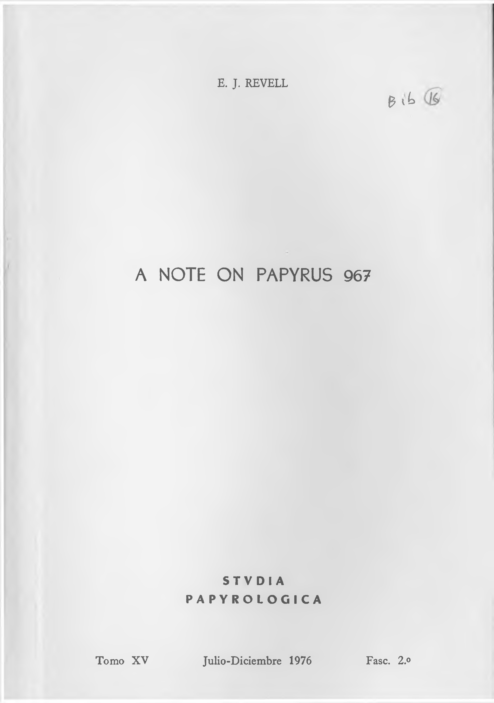

07a.16 A Note on Papyrus 967
E. J. REVELL
0 ib
A NOTE ON PAPYRUS 967
STV DI A
PAPYROLOGICA
Tomo XV
Julio-Diciembre 1976
Fasc. 2.o
A Note on Papyrus 967
The scribe who wrote papyrus 967, the Chester Beatty - Scheide Ezekiel papyrus, divided the text into paragraphs. If a paragraph finished within a line, he left a space about the width of an average letter before beginning the next. The first letter of the next line was drawn out a little into the margin, and usually written somewhat larger than average. If a para graph finished at the end of a line, this emphasis of the first letter of the next line —which will be called for convenience a “capital” —was sufficient to mark the paragraph division. These facts were duly noted by Kenyon, and described in greater detail by Johnson, in the first two publications of por tions of this MS,1 but neither showed any curiosity as to the scribe’s motivation for the division. Galiano, who published a third portion, evidently believes that they originated with the scribe himself.2 Jahn, who published a fourth portion, ignores them.3 The general lack of curiosity about such features of
1 See F. G. Kenyon, The Chester Beatty Biblical Papyri, fasc. VII (London, 1937) p. viii-ix, and A. C. Johnson et al. The John H. Scheide Biblical Papyri: Ezekiel (Princeton, 1938) p. 15. Johnson’s statement that a space is left only at Ez. 37:1 is true only if the punctuation was inserted by the scribe as he was writing the text, which is unlikely (see below).
2 See M. Fernandez-Galiano, Studia Papyrologica 10 (1971) p. 18. 3 See L. G. Jahn, Der griechische Text des Buches Ezekiel (= Pa-
pyrologische Texte und Abhandlungen 15) Bonn, 1972.
132
E. J. REVELL
Biblical Texts is unfortunate, for they can be informative. Those of Pap. 967 are, in fact, particularly interesting.
The paragraphing of 967 is clearly related to the petuhot and setumot, the “ open ” and “ closed ” divisions of the Hebrew Bible (MT).4 A paragraph is marked in the Greek text in 22 out of 30 cases where the Hebrew text has petuha (73%) and in 27 of 64 cases where it has setuma (42%).5 This tendency to more frequent omission of divisions corresponding to setumot can be remarked in other texts.6 Three further divisions in the Greek text correspond to a Hebrew division, but cannot be tabulated in this way,7 so that a total of 52 paragraphs are marked where MT has petuha or setuma. A capital is marked in the margin in six other cases, but one of these, (in Ez. 23:14 in the first line of a column), is unique in that it occurs within a clause. It cannot, then, mark a paragraph division, and almost certainly results from scribal error. Consequently it can be argued that only 10% of the paragraphs marked by the text
4 The representative of MT used here is the third edition of the Kittel-Kahle Biblia Hebraica (Stuttgart, 1937). There is some varia tion among Hebrew MSS as to which type of division is used in a given situation, or even, in some cases, as to whether a division is marked at all.
5 These figures are derived from the photographs published by Kenyon and Johnson (see note 1) and the description published by Galiano (see note 2). The intrusion of the “ capital ” into the margin is very slight, and escaped the notice of Kenyon at Ez. 17:9. One is led to wonder whether the same may not have happened to Ga liano, since the phenomenon was not important to him, and his des cription shows a considerably lower ratio of agreement with MT than is found in the surrounding text (published by Johnson).
6 Cf. M. Gaster’s remark on this phenomenon in Proceedings of
the Society of Biblical Archaeology 22 (1900) p. 250-251.
7 These occur at 38:1, 37:1 and 40:1. The problem in tabulation is due to the placing of chapter 38, (which is preceded by a setuma') after 36:23 (where the division does not even correspond to the end of the Hebrew verse) and chapter 37 (which is preceded and followed by setumot) between 39 and 40 (which, in the Hebrew text, are sepa rated by a petuha).
A NOTE ON PAPYRUS 967
133
hand of 967 are outside the MT tradition. The paragraphing of Pap. 967 is perhaps not so close to MT that it must be said to represent the same tradition, but it is close enough that it can be said that the two systems must have a common origin.
Punctuation was added to the text of Pap. 967 in the form of single dots, which separate small units (normally clauses), and in the form of a sign composed of two strokes or dots which marks larger units. According to Johnson, this two stroke sign “ was evidently inserted by the original scribe ”, although Kenyon disagrees.8 Even if Johnson is right, how ever, it seems highly unlikely that the sign was inserted while the scribe was actually writing the text. It is a quite un necessary addition to the “ capital and space ” method by which the text hand marked paragraphs, as described above, and is, in fact, not used in one case where a paragraph was marked in this way. Furthermore this two-stroke sign was used in a number of places where the text hand had not marked a pa ragraph, and where, consequently, no adequate space had been left in which to place it. This paragraph marking by the punctuating hand must, then, be seen as a supplement to, or correction of, the paragraphing of the text hand.
The punctuating hand marked this two-stroke sign in 24 of 31 cases where MT has petuha (77%) and in 38 of 62 cases where MT has setuma (61%). Wherever the text hand marked a paragraph corresponding to a petuha or setuma, the punctuat ing hand also marked a paragraph, save in one case of each, where the text is broken and the evidence lost. In addition, the two stroke sign was used in three new cases corresponding
8 See Johnson (op. cit. note 1) p. 15. Kenyon (op. cit. note 1) p. ix. Presumably the only indication of the originality of such punc tuation is the colour of the ink, which cannot in any case prove the point. Galiano expresses his uncertainty on p. 21 (op. cit. note 2).
134
E. J. REVELL
to petuha, and in twelve corresponding to setuma.9 The sign is also used where the text hand marked a paragraph before chapters 37, 38 and 40, so that 64 paragraphs are marked in accordance with MT. The sign is not used at 14:19, where the text hand marked a paragraph but MT has none, but other wise, where the evidence remains, the sign was used wherever a paragraph had been marked by the text hand.10 The sign is also used in a maximum of 20 other cases where the text hand did not mark a paragraph, or 24% of all the cases in which it is used.
Some of these 20 cases seem very doubtful. For instance the photograph scarcely seems to justify the two-dot sign marked in Johnson’s transcription in Ez. 20:4, where it occurs within a clause. It seems clear, however, that the paragraphing by the punctuating hand is farther from the MT tradition than that of the text hand, and the exact details are unimportant. What is significant about this paragraphing by the punctuating hand is that it proves definitely that paragraph divisions were important to those who used this text. The paragraphing by the text hand could result simply from dutiful copying of an ancient but obsolete tradition. The paragraphing added to the text by the punctuating hand, however, can only represent current usage.
The general view appears to regard the paragraphing of Septuagint texts as the work of the individual scribe, unfettered by any tradition. This may be the case in some MSS, but is very unlikely here. The paragraphing by the text hand is clearly related to the tradition found in MT. This paragraph
9 This number includes cases at Ez. 12:17 and 17:11 where lacu nae prevent our knowing whether a paragraph was marked by the text hand.
10 A lacuna prevents our knowing whether the sign was used in Ez. 23:14 where the text hand appears to have marked a paragraph in error.
A NOTE ON PAPYRUS 967
135
ing is not ignored by the punctuating hand, but added to, and about half the new additions also agree with the paragraphing of MT. The punctuating hand appears, then, to be presenting a variant form of the same tradition of paragraphing as was followed by the text hand. This tradition, then, which derived from the same source as that of MT, was still important to some groups using the Septuagint in the third Century.
This conclusion seems the more significant when contrasted with the usage of other texts. Some, like Pap. 911, mark no paragraphs. In others, like cod. 927, the “ paragraphing ” seems to be simply ornamentation. In the fragment of Aquila publish ed by Burkitt, where one might expect to find the MT tradition used, a quite different system appears which agrees with the paragraphing of codex A.11 The paragraphing in a fragment of an Old Latin text published by Vaccari shows a similar system of paragraphing to that of A.12 Since this system is used in three texts of such diverse origin, it is justifiable to speak of it as a second tradition, different from that of MT, which was also of importance to some who used the Septuagint. The diversity of the texts shows, of course, that this particular tradition of paragraphing was independent of the textual tradition
11 See F. C. Burkitt, Fragments of the Book of Kings according to the Translation of Aquila (Cambridge, 1897). This text shows para graph divisions in III R 21 (I Kgs 20) before verses 8, 12, 14, 15 and 17, and within verse 9. A marks the same divisions, save that one is marked within verse 14 instead of before verse 15. In IV R 23 (II Kgs 23) both texts mark a division before verse 27, and probably before verse 25. The scribe of A seems to have lost the tradition of paragraphing in verses 1-24 of this chapter, however, for in this long passage he marks one only at v. 16, leaving units of (for A) most unusual length. The Aquila text, where visible, marks the divisions with characteristic frequency.
12 See A. Vaccari in Papiri Greci e Latini vol. 12, fasc. 2, ed. V. Bartoletti {Pubblicazioni della Societa Italiana per la ricerca dei papiri greci e latini in Egitto\ Firenze, 1951) No. 1272 (also Biblica 22 [1941J p. 1-11). Six paragraphs are marked in Ex. 8 and 9. A marks all these and two more.
136
E. J. REVELL
with which it was used. The MT tradition was used in Fouad pap. 266, a Jewish text,13 and a tradition related to that of MT is used in pap. 967, which shows a form of the Septuagint text brought, to some extent, into conformity with the standardized Hebrew text.14 It would seem, then, that the use of paragraph ing related to that of MT does have some connection, if not with the textual tradition in which it is used, then at least with the outlook of those who used the text. It is to be hoped that related traditions of paragraphing can be recognized elsewhere so that this conclusion, which, being based only on two texts, is no more than tentative, can be confirmed or rejected.
E. J. Revell
Department of Near Eastern Studies University of Toronto
13 See my description in Bulletin of the John Rylands Library 54
(1971-2) p. 216-217.
14See J. Ziegler in ZAW 61 (1945-8) p. 94 # 3 (cf- p. 84 ff.).
